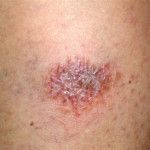
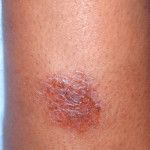
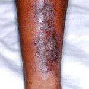
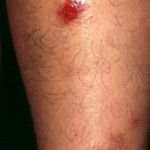
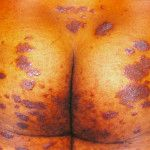
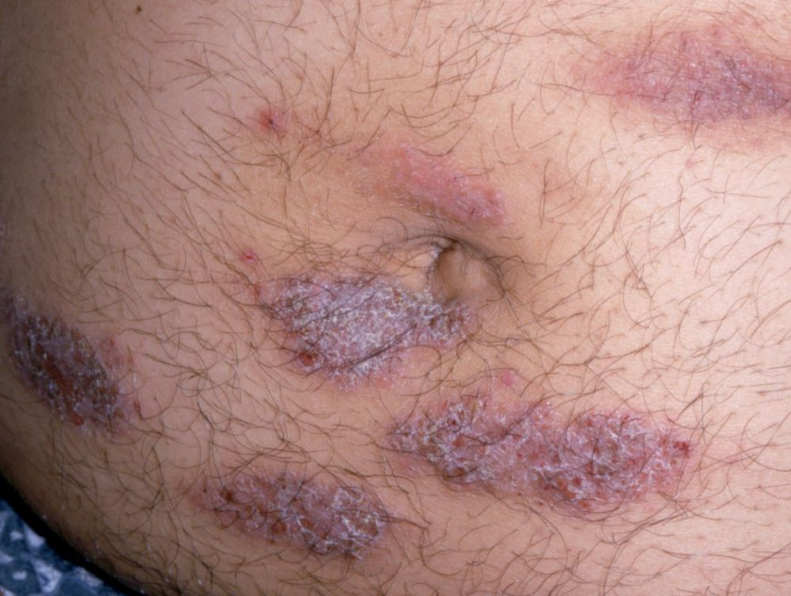
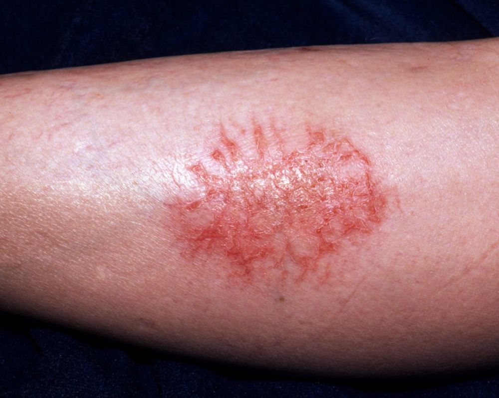
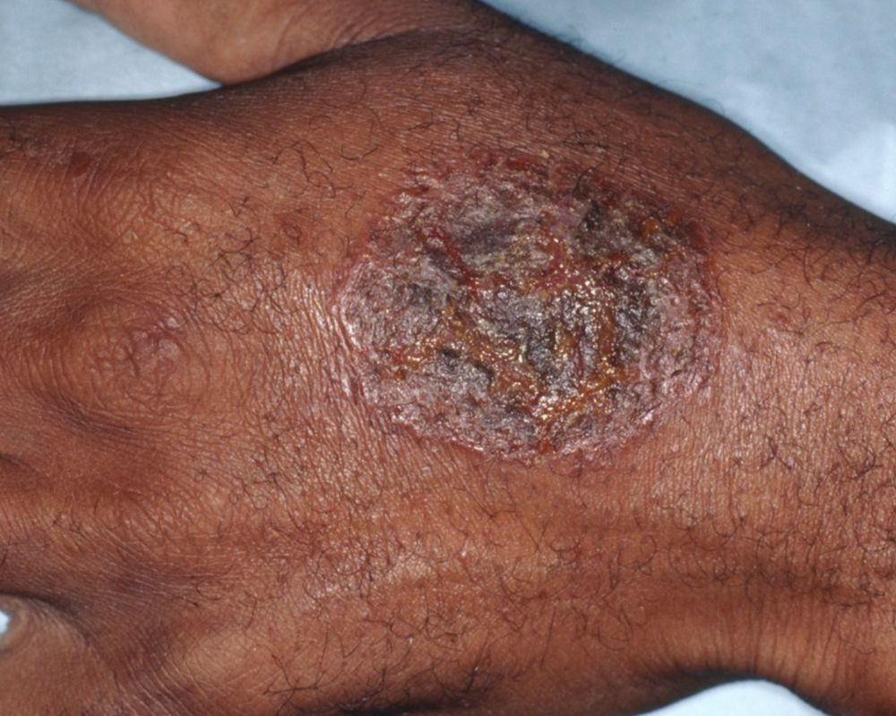
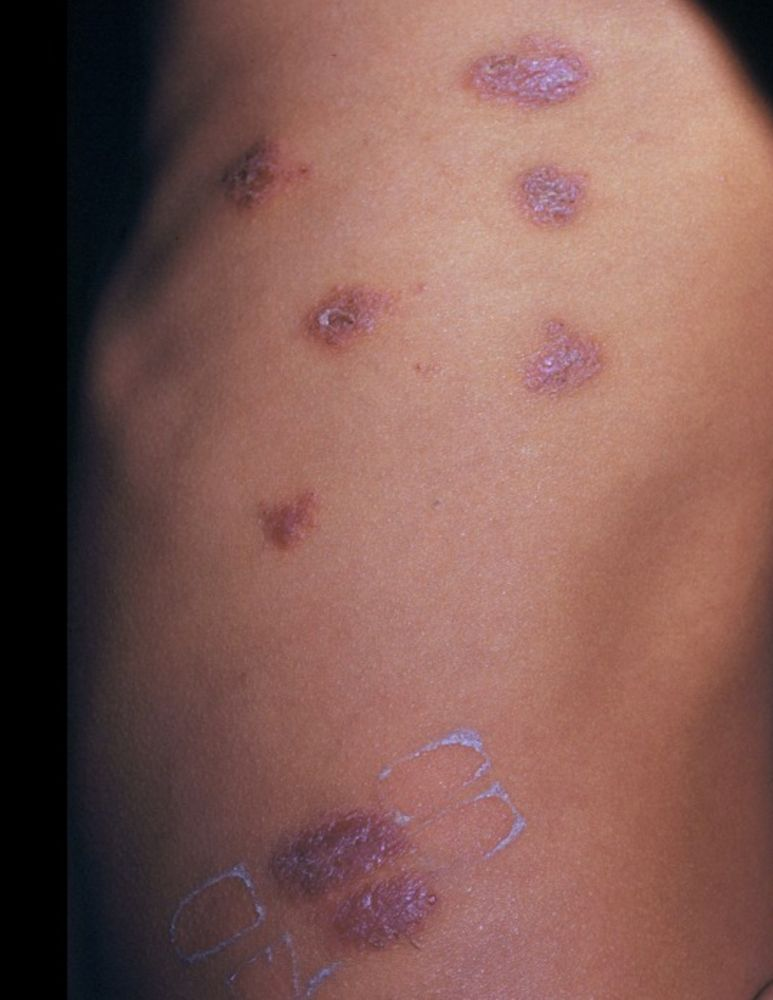
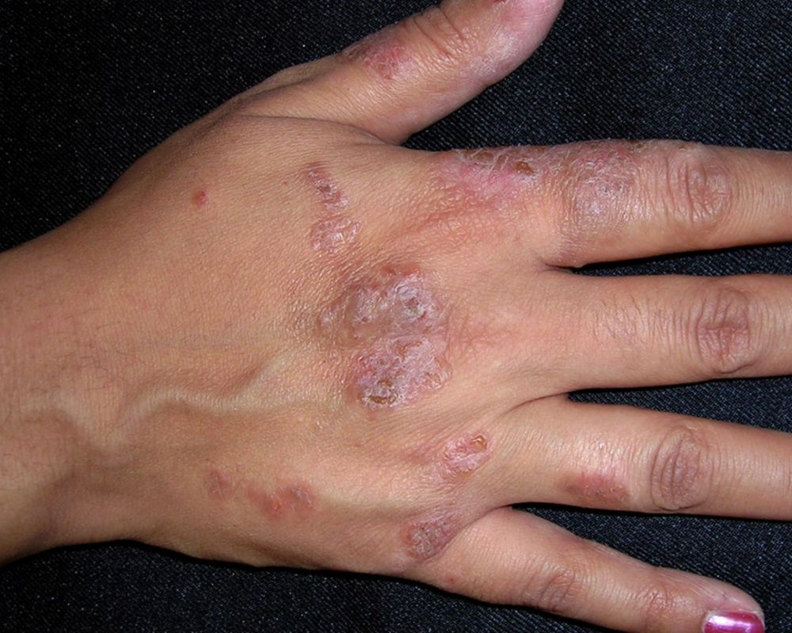

O eczema numular, também conhecido como dermatite numular ou eczema discoide, é uma doença crônica da pele caracterizada por manchas em forma de moeda, com prurido e inflamação. Pode afetar pessoas de todas as idades, mas é mais comum nos adultos, principalmente mulheres de meia idade e raramente ocorre em crianças.
Etiologia
A causa exata é desconhecida, mas está frequentemente associada a pele seca, fatores ambientais e, por vezes, a doenças subjacentes como alergias ou stress. O eczema numular mostra respostas imunológicas tipo 2 e tipo 3 sobrepostas, enquanto a imunidade tipo 2 predomina e deve ser o alvo principal de intervenções terapêuticas específicas. Isto apoia a visão do eczema numular como uma variante da dermatite atópica. Alguns fatores são implicados no seu estabelecimento tais como: infecções estafilocócicas, picadas de inseto, queimaduras, exposição a substâncias químicas, inclusive cosméticos e o “stress”, além da terapia com interferon para hepatite C e exposição a tecidos irritantes, como lã (roupas ásperas).
Manifestações clínicas
Manifesta-se através de lesões eczematizadas, numulares, uniformes, dispostas, principalmente, nas pernas. Compromete, entretanto, outras regiões como, antebraços, dorso das mãos e tronco. Normalmente, o tamanho da lesão varia de 1 a 10cm de diâmetro. As lesões mais antigas têm aspecto tricofitoide. A tendência é para a cronicidade com períodos de exacerbação. Em 1937, Sulzberger e Garbe descreveram um quadro de eczema numular extenso descrito como dermatose crônica exsudativa discoide e liquenoide ou doença "Oid-Oid" ou Síndromde de Sulzberger-Garbe.
Tratamento
Consiste em evitar situações que tornem a pele seca. Reduzir a frequência dos banhos. Usar roupas de algodão e evitar tecidos que causem atrito. Topicamente, usar os emolientes e os corticoides potentes nos estágios iniciais. Nas fases subagudas o coaltar pode ser usado isoladamente ou alternado com o corticoide tópico. Inibidores tópicos de calcineurina: cremes não esteroides como tacrolimus ou pimecrolimus para áreas sensíveis.
Sistemicamente, os anti-histamínicos podem surtir efeito, principalmente os sedantes. Nos casos mais graves pode ser usado corticosteroide sistêmico. Antibióticos de largo espectro como a oxitetraciclina ou cefalexina podem ser utilizados à semelhança do que foi referido no eczema atópico, mesmo sem infecção aparente. Identifique e evite irritantes ou alérgenos que piorem os sintomas. Em casos graves, a terapia com luz UV pode ser recomendada.
REFERÊNCIAS BIBLIOGRÁFICAS
1. Nummular Eczema: An Updated Review. Leung AKC, Lam JM, Leong KF, Leung AAM, Wong AHC, Hon KL.Recent Pat Inflamm Allergy Drug Discov. 2020;14(2):146-155.
2. Nummular Dermatitis. Robinson CA, Love LW, Saleh HM, Farci F.2024 Mar 1. In: StatPearls [Internet]. Treasure Island (FL): StatPearls Publishing; 2025 Jan–.PMID: 33351436
3. The neglected twin: Nummular eczema is a variant of atopic dermatitis with codominant T(H)2/T(H)17 immune response. Böhner A, Jargosch M, Müller NS, Garzorz-Stark N, Pilz C, Lauffer F, Wang R, Roenneberg S, Zink A, Thomas J, Theis FJ, Biedermann T, Eyerich S, Eyerich K.J Allergy Clin Immunol. 2023 Aug;152(2):408-419.
4. Sulzberger-Garbe exudative discoid and liche chronic dermatosis ("Oid-Oid disease")--reality or fiction?. Jansen T, Küppers U, Plewig G.Hautarzt. 1992 Jul;43(7):426-31.
5. A 6-year-old boy with Sulzberger and Garbe dermatosis: a case report and literature review. Tabara K, Noweta M, Bienias W, Kaszuba-Bartkowiak K, Kaszuba A.Postepy Dermatol Alergol. 2013 Dec;30(6):403-8.
Atlas de imagens 10




















Na Skin Prime
Como podemos ajudar
O texto sobre Eczema numular não cita procedimentos específicos entre os oferecidos pela clínica. A conduta é definida em consulta: nossa equipe avalia as manifestações na pele e orienta o tratamento ou o encaminhamento adequado.